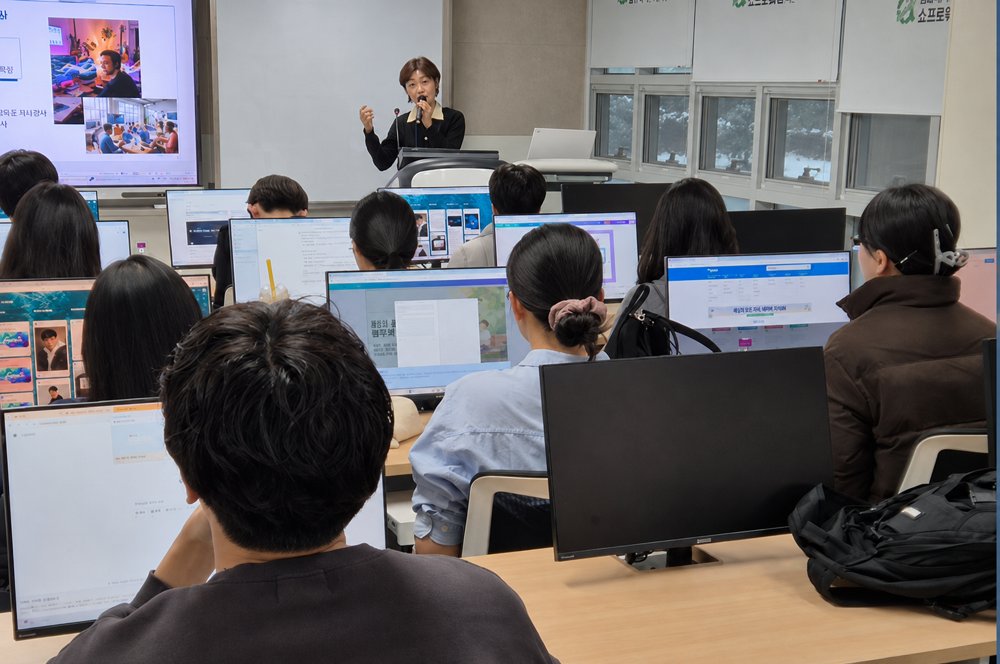

ABOUT
아이들과 함께 성장하는 대표와 강사진을 소개합니다.
대표강사 소개

생각을 움직이고, 아이디어를 결과물로 만드는 교육
박주라 강사는 유아부터 청소년, 특수학습자, 성인, 교사와 예비 강사까지 폭넓게 만나 온 SW·AI 교육 전문가입니다. 메이커팩토리 SW교육 팀장으로 활동하며 학교, 대학, 교육기관, 캠프 등 다양한 현장에서 학습자의 연령과 수준에 맞는 교육과정을 기획하고 운영해 왔습니다.
단순히 프로그램 사용법이나 코딩 순서를 따라 하는 수업에 머무르지 않습니다. 학습자가 생활 속 문제를 발견하고, 자신의 아이디어를 설계하고, 코딩과 교구를 활용해 직접 구현한 뒤 발표와 피드백까지 경험하도록 수업을 구성합니다.
코딩을 처음 접하는 학습자도 부담 없이 참여할 수 있도록 개념을 쉽고 친근하게 설명합니다. 이후 만들기, 팀 미션, 문제해결 프로젝트로 자연스럽게 확장하여 학습자가 스스로 생각하고 도전할 수 있도록 이끕니다.
코딩교구는 단순한 체험 도구가 아닙니다. 학습자가 아이디어를 눈앞의 결과물로 구현하고, 실패와 수정을 반복하며 문제해결력을 키우는 교육 도구입니다.
학습자의 눈높이에 맞는 사례로 개념과 원리를 이해합니다.
정답을 바로 제시하기보다 스스로 문제를 발견하고 생각하도록 돕습니다.
코딩, AI, 교구를 활용해 아이디어를 실제 결과물로 구현합니다.
역할을 나누고 협력하며 다양한 해결 방법을 경험합니다.
결과물을 발표하고 피드백을 나누며 배움을 자신의 지식으로 완성합니다.
모든 학습자는 자신만의 속도와 방식으로 성장할 수 있습니다.
빠르게 따라오는 사람만을 위한 수업이 아니라, 누구나 질문하고 실패하고 다시 시도할 수 있는 수업을 지향합니다.
잘 가르친다는 것은 강사가 더 많이 설명하는 것이 아니라, 학습자가 스스로 생각하고 “내가 해냈다”는 경험을 갖도록 돕는 것이라고 믿습니다.
기술을 배우는 시간을 넘어, 학습자가 자신감을 얻고 세상을 바라보는 시야를 넓히는 교육을 만들어 갑니다.
학습자의 작은 아이디어가 하나의 프로젝트가 되고, 프로젝트를 완성한 경험이 새로운 도전으로 이어지도록 돕겠습니다.
쉽게 시작하고, 즐겁게 도전하며, 스스로 완성하는 교육. 박주라 강사가 함께합니다.